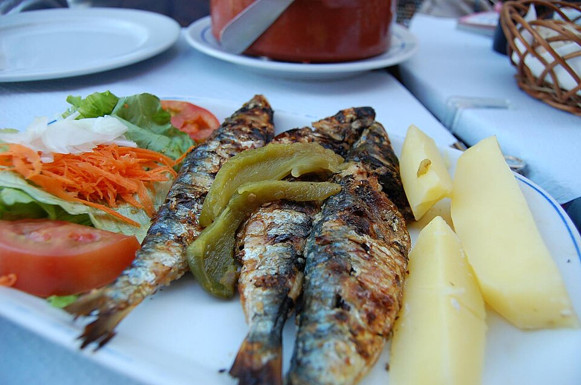

Slope
Variation 04 of the phase 36 phone. Same data as ios-2, same components, a different direction — and it is a prototype rather than a picture. Everything the app does on a timer, this page does on a timer: press Play and the Add flow runs, tap a chip and the ring fills and the flame catches, drag the expectation chart and the tooltip follows your finger, switch a food rule off and the projection re-rakes and the landing number moves.
Direction
n7Z7zX5eRJKljZL6SClpoRpH
- The read
- A word is hiding in the tail: s · l · o · p · e are all there, in order, across e…L6SClpo. The digits are 7, 7, 5, 6 — they add to 25, which reduces to 7, and 7 is already in the string twice. Three Z's (Z, z, Z) are the zigzag. A seed that stutters and then settles: that is exactly what a week of eating looks like against eight weeks of a marker.
- Mood
- A day is noise. Eight weeks is a slope.
- Accent
- One blue rake, #3f6ea8 in light and #8fb6e4 in dark, taken off the system's navy so it belongs. It tints four things and nothing else: the 55 px bar at each card's top-left, the projection line, the ring's arc, and the wash under the expectation chart. Lime is still only the add control. The spectrum is still only a word.
- Type
- Three adjacent rungs per block, never a skip. Lists take 11 / 13 / 15. Cards take 13 / 15 / 21. Only the landing number and the day's calories get 34, and only one of them is on screen at a time.
- Density
- Seven is the count. Seven day points, seven rows before a rule, 7 px of rise on anything that enters, 7° of shear on the rake. Chips are 40 px tall so the whole chip is the tap target — the 21 pt box was the defect.
- Cards
- No shadow. One hairline, radius 21, and the rake bar leaning the same 7° on every card so the page has one direction of travel.
- Motion
- One easing, cubic-bezier(.22, 1, .36, 1), and one duration family built on 7: 140, 280, 560, 1120 ms. Everything that enters rises 7 px from below-left.
- The idea
- Nothing here is a static picture of a trend. The week strip is a seven-point chart, not seven dots — ticking a chip raises today's point and re-rakes the line. And the projection carries its landing number at the end of the slope, so switching a food rule moves a number you are already looking at, on the same screen, in the same second.
Today, and it ticks
Tap any chip. The check draws in, the chip becomes the ink block, the ring fills to the new count and today's point on the week strip rises. Close all five and the flame catches and the streak goes from 6 to 7. The two chips Apple Health owns say so under their own title, with the hour the total landed.
Saturday Sep 5
6Seven markers are off. Thyroid is the loudest one.
Goals
3 of 7 · Aug 1 drawToday's moves
tap a chip to tick itSystems
12Since you were here
Sep 3 → Sep 5Today, live. The lime plus jumps to the Add flow below.
Plan, the same chips, the rule that was missing
Doing vs SuggestedA suggested row has no habit behind it, so it has no tick box. It gets Adopt instead, and the caption says so before you reach for a box that is not there.
The duplicate the owner photographed is one row here: the suggested loop de-dupes on the normalised title before it draws.
Add, played
The complaint was the four seconds between “Sending” and nothing. Pick an input and press Play: the sheet runs the whole sequence at the speed the app will run it. Text types itself and Send lights. Voice draws a waveform and the transcript lands word by word. One photo gets the scan line, then the callouts one at a time, then the meal card rising with the numbers counting up. Several photos are read in turn, with a tick on each thumbnail as it lands. All four end at the same receipt, and the receipt always offers Undo.
Add
Nothing is written until the receipt appears. The loader and the receipt are the fix for “Sending”, and both paths share them.
What the flow is made of
one timeline, four inputsFour inputs, one timeline. The app needs one waiting state, not four, and one place to put an error.
The expectation
The quick view after a meal or a tick: the day's calories against the
target, protein, the structure of the day. Then the sentence and the
slope. Switch a food rule or a habit off and the projection re-rakes,
the band widens or tightens and the landing number moves — the
arithmetic is lib/projection.ts, grade-weighted effect ×
adherence × horizon, summed, clamped by MAX_CHANGE. Drag
across the plot and the tooltip follows your finger.
Saturday, so far
3 meals · 2 of 5 movesCarbs and fat carry a number and no bar, because there is no target for them on file. A bar with an invented target is a lie in a thin rectangle.
If you keep this
8 weeksWhat is doing the work
switch one offDrag across the plot. The card carries the date, the value, the unit and whether it is a draw or a projection, and it never claims a state word for a number nobody measured.
The arithmetic, printed
recomputed on every switch| Contribution | Grade | Adh. | mg/dL |
|---|---|---|---|
| Total, clamped at 50 mg/dL | |||
A and B count in full, C is halved, D and E never project. The band is the grade-weighted spread: an A contribution is allowed to be 30 % wrong, a B 40 %. The contributions add up because that is how the trials measured them, separately, and nobody has measured the combination.
Meals, and a meal
Rows became cards, because a row cannot hold a thumbnail and a thumbnail is how you find the meal you meant. Tap a card to open Edit and Delete — the two verbs that were out of reach. The detail keeps the photograph as its hero, the portion stepper, the ingredients with amounts, Fix results and the confirm that names every write it is about to undo.
Meals
3 · 1 from a photo


Tap a card to open Edit and Delete.
All of it
Saturday Sep 5Workouts this week
the row Body never hadThe three sessions the owner could not see. They were on file all along; nothing on Body listed them and the habit they would tick was still a suggestion.
Apple Health
19 types · last sync 11:32“Nothing synced yet” was a date-parsing bug: the sync stamp carries fractional seconds and the phone's clock parsed without them.
Meals in Body, with real plates.
Meal
Ingredients
4 · tap a row to editFix results
tell it what it got wrongA fix is a second read of the same photo with your sentence attached. It replaces the items; it never appends a second meal.
Meal detail. When there is no photograph the hero is a flat cream tile with a lucide utensils glyph — never a stock picture of someone else's food.
The same components, at 1280
Web Home, built from the phone's parts and nothing new: the week strip is the same seven-point chart, the move chips are the same 40 px chips and tick the same way, the expectation chart is the same function drawn wider, and the meal cards are the same cards. The only difference is that three columns fit where one did.
Saturday Sep 5
6Seven markers are off. Thyroid is the loudest one.
Today's moves
2 of 5Goals
3 of 7Systems
12If you keep this
8 weeks · LDL cholesterolMeals
Saturday · 1 497 kcal est.
One 1280 px frame. Every component on it is imported from the phone sections above — same markup, same CSS class, same handler.
The same, in dark
The owner runs the phone in dark, so the direction has to hold there. The rake lightens to #8fb6e4 so it keeps 3:1 against the dark canvas; lime survives on the add control; the ticked chip is the ink block, which in dark is the near-white one. The page toggle at the top right flips the whole document.
Saturday Sep 5
7Seven markers are off. Thyroid is the loudest one.
Today's moves
5 of 5 · day closedIf you keep this
8 weeksMeals
3


A closed day, in dark. Five of five, the flame lit, the streak at seven, and three more real plates.
Motion, stated
One easing everywhere: cubic-bezier(.22, 1, .36, 1). One
duration family: 140, 280, 560, 1120 ms. The Swift build copies this
table rather than guessing.
| What moves | Duration | Trigger | Reduced motion |
|---|---|---|---|
| MoveChip fill and scale 0.96 → 1.03 → 1 | 280 ms | tap | fill only, no scale |
| MoveChip check, 21 units of dash drawn | 560 ms, 90 ms in | tap | drawn instantly |
| ProgressRing arc, stroke-dashoffset | 560 ms | count change | snaps |
| WeekStrip today point, top | 560 ms | count change | snaps |
| StreakFlame pop and 3 flickers | 560 ms + 3 × 1.4 s | day closes | colour only |
| ReadingLoader dots | 1120 ms loop | while reading | static dots |
| Kept chip rise, 7 px from below-left | 560 ms, 280 ms apart | each word kept | appears |
| ScanOverlay line sweep | 1960 ms loop | while reading a photo | hidden |
| ScanOverlay shimmer, 7° rake | 1960 ms linear | while reading a photo | hidden |
| Callout rise | 280 ms, 280 ms apart | each item detected | appears |
| Waveform bars | 1120 ms loop | while listening | flat bars at 42 % |
| MealCard numbers counting up | 560 ms | card arrives | final value |
| Projection line and band redraw | 560 ms | switch or horizon change | snaps |
| Landing number rise | 280 ms | projection changes | swaps |
| SwipeRow face, 118 px | 280 ms | tap or swipe | snaps |
| ChartTooltip follow | none, tracks the pointer | drag | same |
Where the numbers and the pictures come from
Data. The same file as ios-2.html: 52 markers with
a value, 7 off, TPO 320 IU/mL against normal 0–34, vitamin D 19 ng/mL
against 40–60, ferritin 22 ng/mL, LDL 118 mg/dL against the 70–100
goal band, the Aug 1 2026 draw, a 6-day streak with 18 as the best
run, three meals on Saturday Sep 5 totalling 1 497 kcal and 93 / 93 /
84 g, steps 10 935 against a 90-day mean of 11 062, exercise 43 min
against 49, three strength sessions on file for the week. The
projection is lib/projection.ts run in the browser on the
seeded interventions: effect × grade weight (A and B 1, C 0.5, D and E
0) × adherence × min(1, horizon ÷ the paper's own duration), summed,
clamped by MAX_CHANGE.ldl_cholesterol = 50, with the band
from GRADE_SPREAD. The adherence figures are the ones on
the Plan rows: psyllium 86 %, oats 64 %, olive oil 85 %, the walk 57
%, resistance 33 %, plant sterols 71 % if it were adopted.
The one number this page adds. LDL 118 mg/dL, the figure the phase 36 brief names as the starting point for “lands near 104”. The two dated draws already on file are 168 mg/dL on Dec 9 2025 and 131 mg/dL on Aug 1 2026; 118 is the Sep 1 2026 panel. Everything else is carried over unchanged.
Photograph credits
6 files · all free licences- 04-sardines.jpg — “Grilled Sardines in-the-Charcoal with salad 7.50€”, Yusuke Kawasaki, 2009. CC BY 2.0. Wikimedia Commons
- 04-porkbelly-bread.jpg — “Belly pork kebab with pita bread, Albufeira”, Kolforn, 2017. CC BY-SA 4.0. Wikimedia Commons
- 04-tuna-chilli.jpg — “Pirkka Sweet Chili canned tuna”, JIP, 2021. CC BY-SA 4.0. Wikimedia Commons
- 04-salad.jpg — “Fresh Green Salad”, Prayitno (Los Angeles), 2013. CC BY 2.0. Wikimedia Commons
- 04-eggs.jpg — “Boiled eggs on a white plate”, Nana Pearls, 2025. CC0. Wikimedia Commons
- 04-oats.jpg — “Cooked oatmeal in bowl (low angle)”, Bodhi Peace, 2018. CC BY-SA 4.0. Wikimedia Commons
.jpg){kind=link}
{kind=link}
{kind=link}
.jpg){kind=link}
{kind=link}
.jpg){kind=link}
Downloaded from Wikimedia Commons at 900 px and stored in
ios-variations/img/. Every file was checked with
file and looked at before it was used. The app itself
never ships stock food photography — these are here so the drawing
is convincing, and in the app the picture is always the owner's own.
← the other iOS variations · ios-2, the drawing this varies · the system